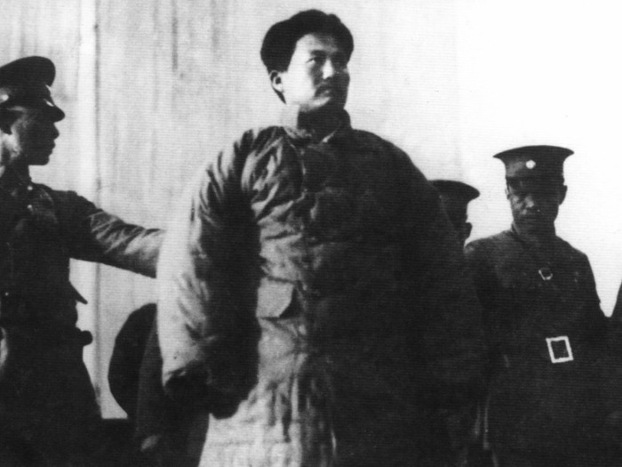

|
回目录 回主页 |

方志敏可謂耳熟能詳，他寫的文章曾被選入大陸的中小學課本，又被評為100位為新中國成立做出突出貢獻的英雄模範人物，方志敏到底幹了什麼？
1935年2月7日，方志敏被押至南昌豫章公园示众 1924年3月，方志敏加入中國共產黨，不久，回老家弋陽領導農民運動。方志敏的五叔方雨田帶頭對抗農民運動，1925年夏，方志敏帶頭抓捕地主——親叔叔方雨田，他的祖母、父親都來求情，他仍然下令把五叔處死。 方志敏在1931當選為蘇維埃政府「贛東北省主席兼財政部長」，這個財政部長籌款的主要方式就是綁票和洗劫。 洗劫瓷都景德鎮1930年7月，方志敏領導的紅十軍襲擊距離不遠、守衛空虛的有「錢櫃」之稱的瓷都景德鎮。方志敏所部偽裝成國軍，兩天之內奪取了只有一個營守衛的景德鎮。這次行動收穫頗豐，獲得的黃金、白銀、股票，價值30多萬元，除了留下贛東北蘇區自用的錢財珠寶外，僅運往中央蘇區的就有赤金2箱、白銀48箱。此外，方志敏此行還綁架了多名在景德鎮經商的外國商人，並將他們押往「中華蘇維埃共和國贛東北省省會」——葛源。在得到這些外國商人的家人的巨額「贈款」後，這些外國商人得以釋放，但是對自己的同胞，方志敏就沒有這麼客氣了，景德鎮富甲一方，當時中國最著名的瓷器美術大師鄧碧珊家產被哄搶一空，本人也被方志敏砍了腦袋。兩劫「廿八都」方志敏嘗到景德鎮洗劫綁票生意的甜頭後，把目光投向富甲一方的商旅重鎮——浙江省江山的「廿八都」。1932年6月，方志敏故技重施，屬下的廣豐獨立團帶著大批「挑夫」，奔襲廿八都。紅軍不僅掠走大量食鹽、布匹、現洋等數萬元的財物，還把未逃走的地主、商人及其家屬共兩百多人綁回根據地，同時將抓獲的保長謝世仔放歸，讓其通知這兩百多人的家人速將足額的「革命經費」送往蘇區。根據《衢州文史資料》中的《紅軍攻打廿八都見聞》記載，事後謝世仔帶領本地一群青壯年，每人挑著八百塊大洋去紅軍駐地贖人，有些人贖回來了，有些人卻被撕票。兩個月後，方志敏又再次洗劫廿八都，再綁架地主和富紳三十多人為「肉票」，經過這兩次洗劫，廿八都這個繁榮了數百年的商賈小鎮元氣大傷，從此蕭條，不再繁榮。 師達能夫婦被撕票1934年10月，中共第五次反圍剿軍事失利，無力在根據地立足的中共中央領導機關和紅軍主力只能打著「北上抗日」的幌子倉促流竄，為牽制國軍，中共將紅七軍和紅十軍合併，組成新的紅十軍，由方志敏領導，改名「中國工農紅軍北上抗日先遣隊」。但這支所謂的抗日先遣隊並沒有開往有日本人的地方，而是向當時根本沒有日軍影子的安徽、福建、浙江方向倉皇出逃。1934年12月6日，抗日先遣隊下屬的紅十九師在師長尋淮洲的帶領下，占領了安徽旌德縣城。紅軍故技重演，抓獲了在此傳教的美國人師達能夫婦和他們僅兩個月大的女兒愛倫，教會能辦學校和開醫院，肯定是大生意又來了，索要巨額贖金二萬大洋，但遭到他們的拒絕。 在凶殘的匪徒面前，沉默是最安全的選項，但並不是所有的中國人都當幫凶和看客，三個偉大的普通中國人為此成仁成義。被綁當日深夜，嬰兒愛倫受驚啼哭，看守的紅軍士兵極為不滿，欲殺之，一個同被關押但即將被釋放的中國無名氏挺身而出，責問士兵為什麼要殺害一個無辜的嬰兒。 士兵轉向他怒問：「你願意替她去死嗎？」得到肯定的答覆。這人在師達能夫婦眼前被砍成碎片，慷慨成仁，愛倫則被允許存活下來。 次日，「先遣隊」押解著被捕獲的人員及劫掠的大量物資前往廟首鎮，在得知師達能夫婦無意向教會申請贖金後，在廟首鎮舉行大會，欲將師達能夫婦斬首示眾。即將行刑之時，一位當地基督教徒張師聖突然衝入刑場，再三懇求紅軍不要殺害師達能夫婦。紅軍隨後從張師聖的家中搜出一本《聖經》和一本讚美詩，於是，中共便以「帝國主義的走狗」為名，將張師聖和師達能夫婦一起斬首。 12月9日下午，躲藏在山上的中國牧師盧克周潛回廟首，在一間屋內找到了孤兒愛倫，尋得師達能夫婦的屍體，買了兩副棺木，將其安葬。盧克周帶著愛倫，步行北上，沿途尋找乳母餵哺愛倫，最終將愛倫送到山東濟南，交其外祖父母。 中共的暴行和這三個人的行為不就是殘忍與仁愛、醜與美、惡與善的經典範例嗎？ 恩將仇報方在被俘後所寫的《我從事革命鬥爭的略述》中專門有《我不相信基督教》一節，方學生時代被南昌甲種工業學校開除後，著名的江西九江南偉烈學校（教會學校，方志敏曾於1921年求學一年）接受了他，在方志敏參加「非基督教學生同盟」，發動「行政公開、推翻專制腐敗校長」的罷課請願等活動後，仍然沒有開除他。但方志敏似乎對此毫無感激之意，他寫道：「所謂上帝的傳道者——神父、教士們，實際上完全是帝國主義派來深入中國各地的偵探和鷹犬……他們到處造大洋房，開辦學校、醫院，實行許多假仁假義、小恩小惠的事情，都是各國資本家捐助來的巨款，這也就可見他的用意和作用了……像我這樣相信科學、相信真理的青年，哪會相信他們毫無根據的鬼話呢？」方志敏們的報應師達能夫婦的殉難，驚震了中國和世界。在美國政府和世界輿論的強大壓力下，民國政府暫緩了對中央紅軍的圍堵，抽調大批軍力，全力圍剿方志敏部。尋淮洲在殺害師達能夫婦後不到5天，就在太平縣譚家橋伏擊戰中被擊斃，部屬流離失所，損失慘重。方志敏率紅十軍剩餘部隊被迫向閩浙贛邊界逃竄，進至江西懷玉山地區時被國軍包圍，經7晝戰鬥，這支從未與日軍照過面的「北上抗日先遣隊」除少部突圍外，主力基本覆沒，紅十軍軍團長劉疇西、紅十九師繼任師長王如癡被俘，方志敏在玉山縣隴首村金竹村的一個柴草堆中被抓獲。 方志敏被捕後，被國民政府以謀殺師達能夫婦之罪名判處死刑，報應不虛。 王樹聲打劫本家人用共產主義這個「宇宙的真理」調教出來的，就如同一個模子刻出來一般，方志敏殺親叔叔，王樹聲大將亦如此類似：紅軍時期，有一次夜裡，王樹聲大將帶上幾個紅軍戰士，潛回村裡，蒙面去搶劫自己的叔奶奶家。隊伍破門而入，放話要錢。在朦朦的月光中，叔奶奶認出了王樹聲，大吃一驚，當場喊出了他的小名，並對他說：「娃兒呀，你要錢，就直接回來跟叔奶奶說，用不著帶上刀槍來叔奶奶家搶的。」不過，王樹聲只從叔奶奶老人家劫走錢財，叔奶奶家人的性命還是留著，據此可知，王樹聲革命不如方志敏「堅決」，所以王樹聲雖為十大將，卻鮮為人知，也沒有位列100位為中共國成立做出「突出貢獻」的「英雄模範人物」。 責任編輯：高義 |
回目录 回主页 |